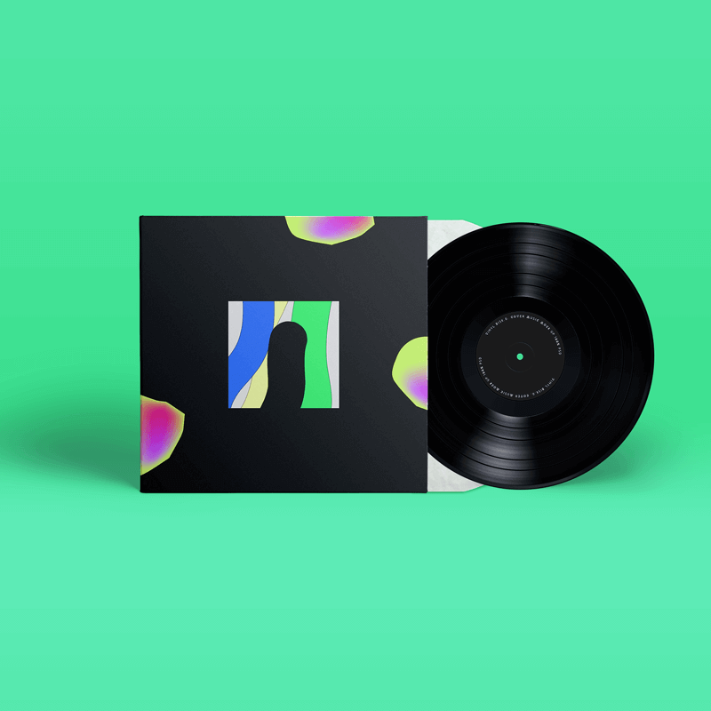
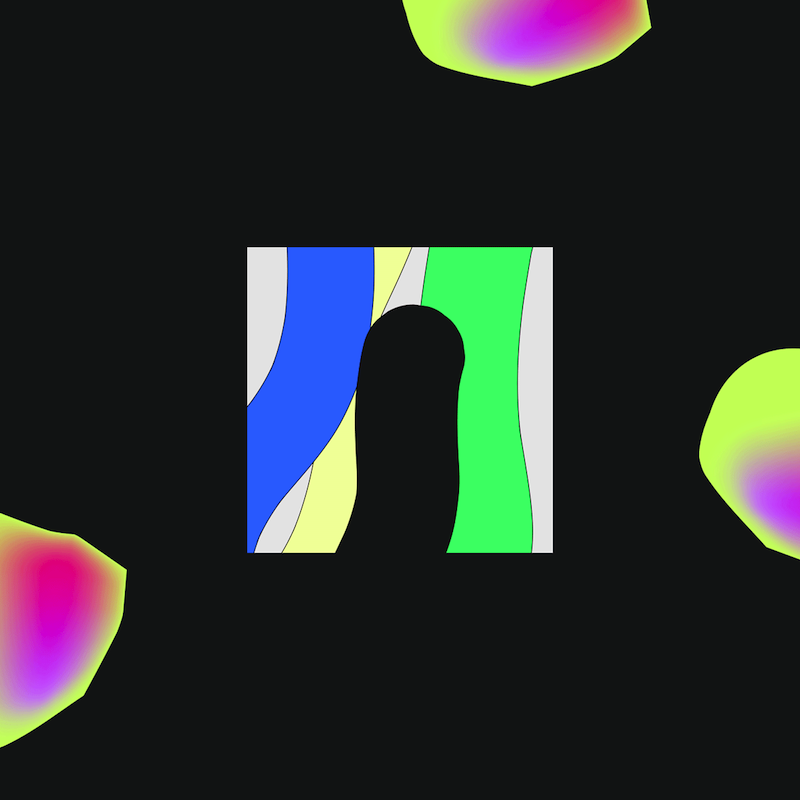

graphic design
Liu Liang Yin
About & CV
previous


CD Cover
Redesign
此為專輯封面的創作。靈感來自孔雀眼迷你同名專輯 JADE EYES，音樂有濃濃的電子和迷幻感，和神秘的歌詞意境。以絢麗的顏色和水晶的意象創作。
樂團 / 孔雀眼 JADE EYS
It's a CD cover Redesign. Inspired by CD JADE EYES.
Their music is Electronic & Psychedelic Rock. Combined with mysterious & cozy lyrics. Created with fancy colors and the image of crystal. Band / JADE EYES.
graphic
color
CD cover
next